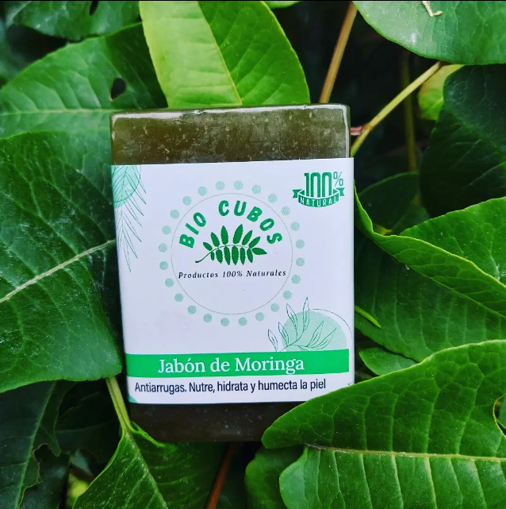

Tienda de cosmetica natural
Somos una tienda virtual en la que manejamos productos naturales para el cuidado de tu piel y tu cabello. Actualmente estamos ubicados en la ciudad de Manizales. Realizamos domicilios gratis en Manizales y Villamaría, también se realizan envios a todo Colombia.
Exfolia, hidrata y alivia irritaciones 😍 Actúa como exfoliante natural eliminando las células muertas, destapando los poros, absorbiendo la grasa y mejorando la apariencia de la piel. Ideal para las pieles sencibles y delicadas, ya que la suaviza y restablece su humedad natural. Alivia la irritación y los dolores de quemaduras solares o fricción. Útil para tratar el acné y ojeras. MODO DE USO: Diario TIPO DE PIEL: Todas (Facial - Corporal)
Antiarrugas, nutre, hidrata y humecta la piel 😁 Aporta increíbles propiedades nutritivas e hidratantes que nos ayudarán a conservar una piel joven, limpia y saludable. Reduce puntos negros, el acné y las manchas que provoca. Alivia la piel áspera y seca, así como las enfermedades que la provocan como el eccema, dermatitis y poriasis. MODO DE USO: Diario TIPO DE PIEL: Todas (Facial - Corporal)